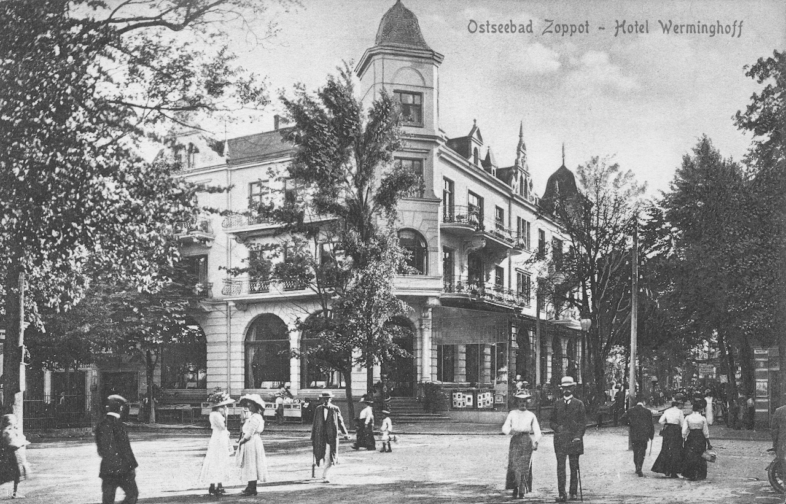
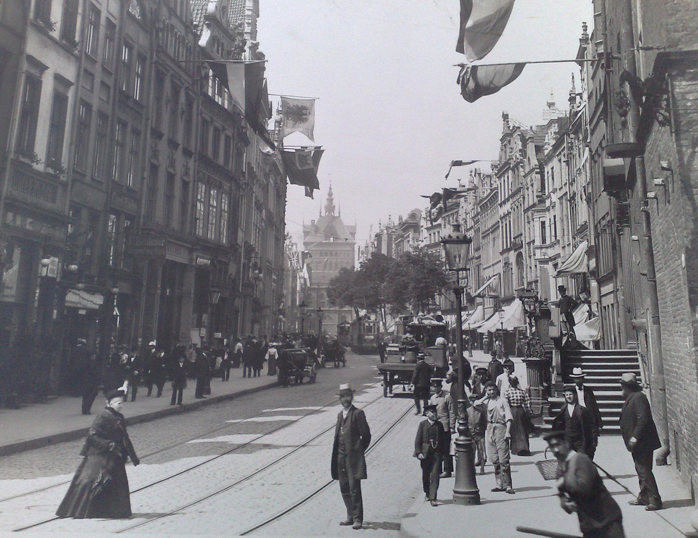

Krajobrazy Rilkego
Zoppot
Pod koniec maja roku 1898 Rilke dowiaduje się, że Lou Andreas-Salomé ma zamiar odwiedzić przyjaciół w Gdańsku; szybko zmienia plany, by móc spotkać się z nią w Sopocie. Nie obawia się bynajmniej wyjazdu nad chłodniejsze wybrzeże Bałtyku po miesiącach spędzonych pośród uroków słonecznego Viareggio. Do Sopotu Rilke zamierza wyruszyć przez Innsbruck i Monachium; ostatecznie pojedzie przez Wiedeń, Pragę i Berlin.
Hotel Werminghoff w Sopocie, w którym latem 1898 roku zamieszkał Rilke
Spotkanie z Lou, do którego doszło w połowie czerwca, zniweczyło wszelkie nadzieje płomiennego kochanka — pisze Donald Prater w biografii „Dźwięczące szkło”. — Lou od dłuższego już czasu zdawała sobie sprawę, że ich związek nie ma przyszłości, a to spotkanie — w tak obcym otoczeniu, z dala od intymności Wolfratshausen czy nawet Schmargendorfu — wydawało się jej właściwą okazją, aby go w delikatny sposób zakończyć. Rainer z początku był rozgoryczony i zawstydzony. „Tym razem ja chciałem być tym bogaczem, kimś, kto obdarowuje, kto zaprasza w gościnę, panem domu, a Tyś powinna była przyjść do mnie i, otoczona mą miłością i opieką, radować się moją gościnnością. Tymczasem zaś stałem znów przed Tobą jak najuboższy żebrak u progu Twego domostwa, które spoczywa na szerokich, mocnych kolumnach”. Poeta przyszedł do niej „wpatrzony w przyszłość”, lecz w tych jałowych dniach, spędzonych u brzegu chłodniejszego morza, znalazł jedynie nieszczęśliwe wspomnienia ich wspólnej przeszłości; nie potrafił choćby na chwilę ożywić ich radości. Ofiarował jej dziennik, który napisał z myślą o niej, lecz w jej oczach nie ujrzał zadowolenia, Lou traktowała go z irytującą delikatnością i próbowała dodać mu odwagi. Zaczął ją nawet nienawidzić, jak się nienawidzi „czegoś zbyt wielkiego”. Nie pragnął słów pocieszenia i czuł, że musi uciec od tych mąk tak upokarzającej go łaskawości.
Ulica Długa w Gdańsku, rok 1906
Kiedy jednak zabrał się do spisywania swych przeżyć na ostatniej stronicy dziennika, nie stroniąc od szczerej i niezwykle przejrzystej analizy, otucha napełniła jego serce. Lou uświadomiła mu, że ich związek nie może przetrwać, choć pozostaną sobie bliscy intelektualnie; zadała mu też „twarde jak spiż pytanie: Co zamierzasz czynić?”. Wówczas zrozumiał, że ona nadal pozostanie jego ideałem. „Jak długo będę mógł iść, Ty zawsze będziesz przede mną… Prawdziwa wartość mej książki kryje się w poznaniu istoty artyzmu, do którego wiedzie jedna tylko droga i który się na koniec jednak zdobywa, gdy się osiągnie dojrzałość”.
Fragmenty biografii Dźwięczące szkło D. Pratera w przekładzie autora; fragmenty dziennika Rilkego w przekładzie W. Markowskiej.